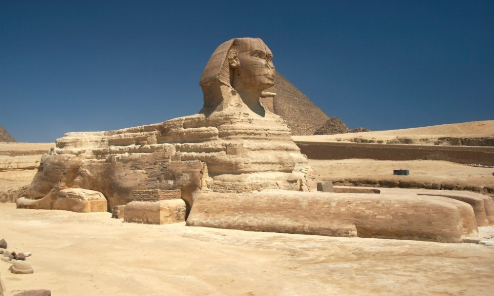
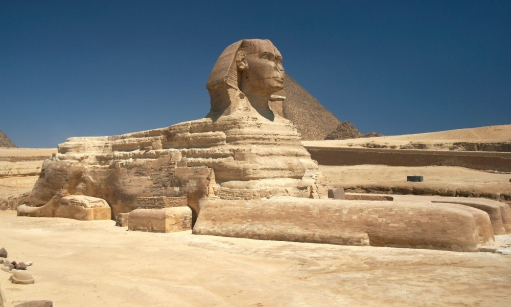

KARNAK TAPINAĞI
- Angkor Vat ile birlikte Dünya'nın en büyük tapınağıdır.
- Akhenaton isimli tek tanrı inancını benimseyen bir firavun tarafından bir süreliğine kapatıldı.
- Mısır tarihinin en büyük ve en önemli mekanıdır.
- Büyük sütunlara çökertme yoluyla yapılan simgeler hiyeroglif keşiflerinde oldukça önemli kabul edildi.
- İçinde kilise ve bir de cami barındıran bir dini komplekstir.
- 2000 yılda bitirildi ve hala keşfedilmeyi bekleyen hazinelerle dolu.
EBU SİMBEL TAPINAĞI
- Firavun II. Ramses tarafından yaptırıldı.
- Büyük bir kazı çalışmasının ardından bulundu.
- Ön kapısında Ramses'in yaptırdığı 4 adet heykel bulunur ve bu kapı büyük bir galeriye açılır.
- Yapılan araştırmalarda yol gösteren Simbel adındaki çocuğun anısına ismi Ebu Simbel konuldu.
- Baraj tehlikesinden dolayı taşındı ve aynı şartlara göre yeniden inşa edildi.
- Fakat güneş ışığının vurduğu güne göre hesap yapılan bu tapınak 1 gün kaymayla ancak yerine konulabildi.
EDFU TAPINAĞI
- Arka kısmı Roma mimarisine uygun olarak hazırlandı.
- Horus'a ithaf edilen tapınak, Karnak'tan sonraki en büyük tapınaktır.
- Kum taşından yapılan bina Nilometre ( Nil Nehri'nin yüksekliğini ölçer) de barındırırdı.
- Pilon denilen ana kapının etrafındaki iki büyük duvarı barındıran ilk örneklerdendir.
HATŞEPSUT - DEİR EL-BAHRİ
- Hatşepsut (Hatshepsut) Antik Mısır Tarihi'nin ilk* ve en güçlü kadın firavunuydu.
- Sürekli birbiri ardına devam eden sütunlu bir mezar yaptırdı.
- En az 22 yıl hüküm süren kadın firavunun bu tapınakta erkek gibi gösterilerek heykelleri yapıldı.
- Pek çok yapıya esin kaynağı olan (Yunan binaları, Türk mimarisi, Anıtkabir v.s.) Hatşepsut Tapınağı, piramit geleneğini yıktı.
- Kadın firavunun mezar odası binanın çok gerisinde, dağın içerisinde bulundu.
FİLAİ TAPINAĞI
- Unesco Dünya Mirası listesine de alınan çok özel bir yapı.
- Bir adaya inşa edilen Filai, Nübye Anıtları olarak da bilinir.
- Hristiyanlığın yaygınlaştığı bir dönemde Paganlığa izin verilen tek tapınak olması onu daha da özel kılar.
- Asvan Barajı'nın yapılması için tüm tapınak 20. yüzyılın başında başka bir adaya taşındı.
- Kuyruklu yıldıza keşif yapmak için giden uzay aracına ismini veren tapınak budur ayrıca.
SFENKS


- Sfenks büyük ihtimalle önünde yer aldığı piramidi yaptıran Kefren'in yüzünü taşımaktadır.
- Toprağın kazılarak, yukarıdan aşağıya doğru yapıldığı iddia edilir.
- Neyi sakladığı bilinmese de altında bir tünel olduğu kesindir.
- Bu tünel tam arkasındaki piramide doğru gider.
- 21 Mart ve 23 Eylül tarihlerinde Güneş ışığı bu yapının tam solundan geçerek ardındaki piramidin çizgisinden geçecek şekilde yapıldı.
DİKİLİTAŞ
- Güneş Tanrısı Ra için yapılan taşlardı.
- Çok düzgün kesilmesi gerekirdi.
- Çünkü Ra'dan gelen ışık, insanı temsil eden toprağa çok düzgün yayılmalıydı.
- Dikili taştaki küçücük bir hata bile ışığın toprağa yansımasını engelleyebilir ve insan ruhunu karanlıklar ele geçirebilirdi.
KRALLAR VADİSİ
- İçerisinde Hatşepsut, Tutankhamon gibi firavunların mezarlarını da barındırır.
- Büyük Tarla olarak da geçer ve aynı zamanda II. Ramses anısına yapılan eserleri de içine alır.
- I. Tutmose'den başlayarak 11. Ramses'e kadar 64 firavunun mezarını bulundurur
KRALİÇELER VADİSİ

- Krallar Vadisi'nin biraz ilerisinde bulunan vadidir.
- 50'den fazla mezar bulunmuştur.
- Birçok cesedin içerisinde II. Ramses'in eşi Nefertari de burada bulundu.
- Çoğu mezar bugüne kadar zarar görmeden ulaşabildi.
TUTANKHAMON'UN MEZARI - KV 62
- Krallar Vadisi'ndeki önemli bir mezardır.
- Alelacele gömülen firavunun mezar kapısı kumlarla kapalıydı.
- Howard Carter tarafından bulunan mezar 20. yüzyılın en önemli keşiflerinden kabul edilir.
- İçerisinde eşi benzeri görülmeyen süslerin bulunduğu yapı, bir tepenin içine açılarak yapıldı.